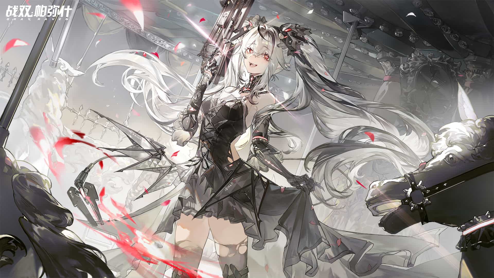

-
Read about the Last Spark →
Vera helps the chief reach Atlantis and find the files on Zero-Point Energy Ω.
-
Read about the Last Resort →
Karenina restarts Zero-Point Energy and causes a disaster. She decides to destroy the engine to save the Earth.
Source: Punishing: Gray Raven WIKI Link: https://wiki.biligame.com/zspms